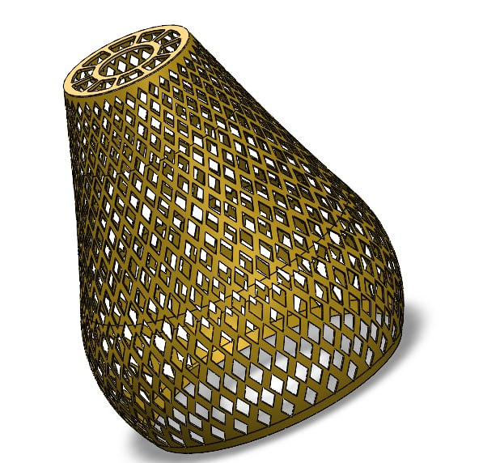

Perforated Lampshade Design
SolidWorks · 3D CAD Modeling · Product Design · Mechanical Design
Project Overview
This project focuses on the design of a decorative lampshade featuring a perforated pattern. The lampshade was developed using SolidWorks, with attention to its overall geometry, appearance, and repeated openings.
The design demonstrates the application of 3D CAD modeling in developing a decorative product concept.
3D Modeling and Design
SolidWorks was used to develop the lampshade geometry and create the perforated pattern. The model combines a functional lampshade form with a decorative appearance.

Design Focus
- 3D modeling of the lampshade geometry
- Development of a repeated perforation pattern
- Decorative product appearance
- Application of SolidWorks CAD tools
Tools and Technologies
SolidWorks · 3D CAD Modeling · Product Design